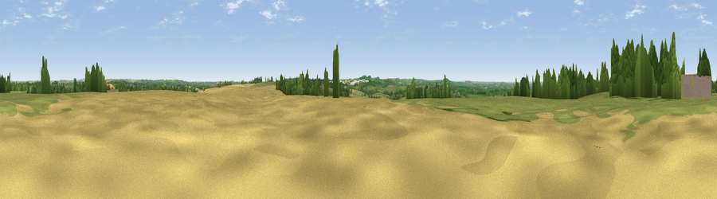

Ashby Grange Hill
#20448 in England · top 21% of its area beats it · near Ashby St LedgersThe view, rendered

A 360° render of this exact spot computed from the terrain model, tree cover and land cover — summer colours, afternoon light, calibrated against photographs of famous viewpoints. Real trees, hedges and buildings will differ in detail.
The panorama
Grey silhouette: terrain skyline in each direction (720 bearings, Earth curvature and refraction included). Dashed green: skyline with trees (+15 m) and buildings (+8 m) as obstacles. Blue strip: how far the ground is visible on each bearing.
Where the view opens
Wedge length = distance to the farthest visible ground on that bearing (vegetation-aware). Rings at 10, 25 and 50 km.
What fills the view
49% grassland · 35% cropland · 11% woodland · 4% built-up
Angular shares of the visible panorama (visual magnitude), not map area. Landscape diversity 0.48 (0–1 Shannon).
Key numbers
More beautiful places nearby
The staircase of upgrades: each row has a higher view potential than everything closer. Driving times are estimates from straight-line distance, calibrated against real road routing — check an actual route before setting out.
| Place | Direction | Drive | Score |
|---|---|---|---|
| Viewpoint near Onley | NW · 4 km | ~9 min | 56.1 |
| Viewpoint near Norton | SE · 6 km | ~12 min | 56.8 |
| Big Hill - Staverton Clump | S · 7 km | ~14 min | 68.4 |
| Viewpoint near Northend | SW · 22 km | ~37 min | 69.7 |
| Viewpoint near Northend | SW · 23 km | ~37 min | 70.3 |
| Viewpoint near Radway | SW · 26 km | ~42 min | 71.7 |
| Viewpoint near Ilmington | SW · 43 km | ~63 min | 72.6 |
| Viewpoint near Meon Vale | WSW · 44 km | ~64 min | 77.0 |
52.30654, -1.18639 · source: osm peak · position refined by local search. Computed location — check access rights before visiting.